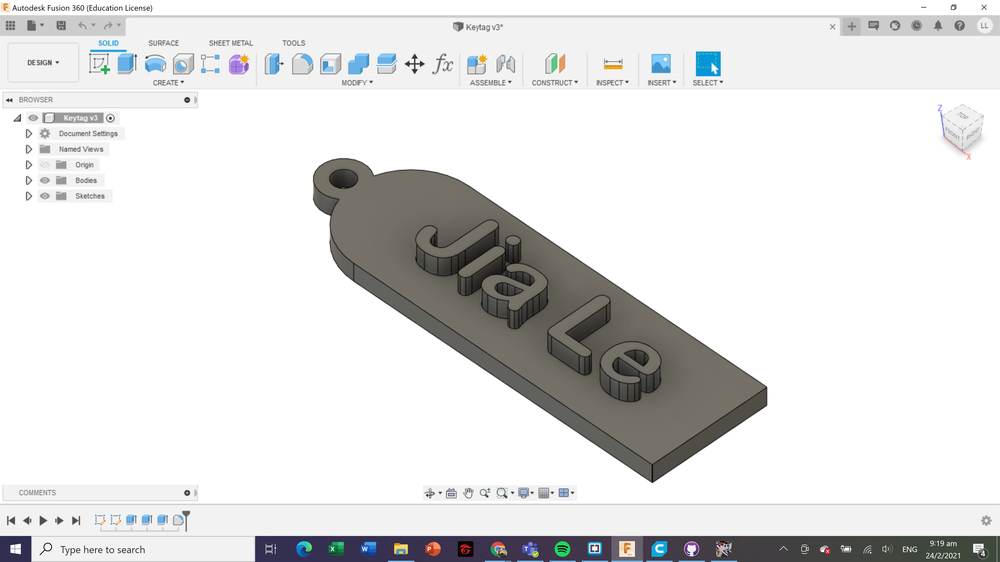
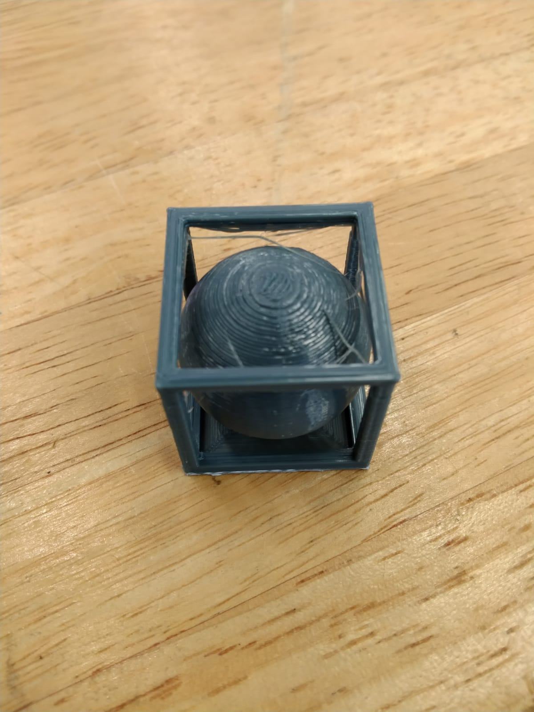
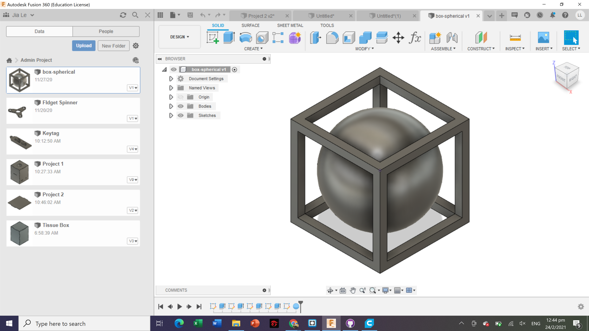

3D Printing
3D printing is a form of additive manufacturing as it creates objects by adding layer upon layer of material until the shape of the object is formed. 3D printing is suitable for producing prototypes and small products that are expensive to produce using other manufacturing processes. However, compared to manufacturing on a large-scale, 3D printing is much slower and more costly.
Pros of 3D printing
- Flexible design
- Print on Demand
- Fast Design and Production
- Minimising Waste
- Environmentally Friendly
Cons of 3D Printing
- Limited materials
- Large Volumes
- Reduction in Manufacturing Jobs
- Design Inaccuracies
Below are the 2 items which I 3d printed using the Ultimaker 2+
Nametag
Keytag Fusion 360
Box spherical
 Box-spherical Fusion 360
It was quite hard to remove the support from the box spherical as there was still some leftover suppport stuck to the bottom of the box spherical
Overall, I learnt that the temperature must be right in order for it to 3D print it out optimally. If the printing temperature is too high, it makes it hard to clean up the strings which snaps up when you pull it.